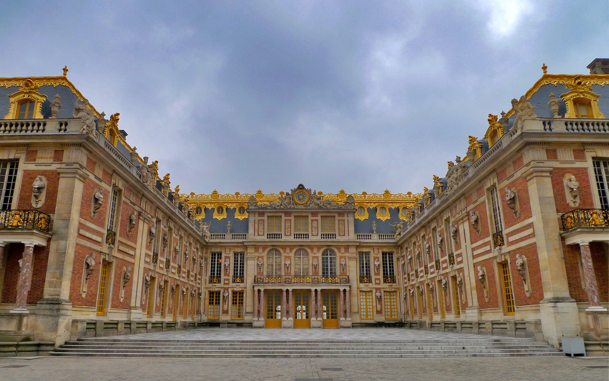

The grand facade of the Palace of Versailles (Photo: Unsplash)
The Jewel of French Monarchy
The Palace of Versailles began as a modest hunting lodge built by Louis XIII in 1623. His son, Louis XIV, transformed it into the magnificent palace we know today, moving the royal court there in 1682. Versailles became the seat of political power in France until the French Revolution in 1789.
The palace is renowned for its Hall of Mirrors, the stunning Royal Chapel, and the lavish King's and Queen's State Apartments. The gardens of Versailles are equally impressive, spanning over 800 hectares with meticulously manicured lawns, fountains, and sculptures.